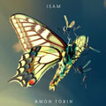

Коллекции
for runs
rock
party
techno
Рекомендуемые
Хиты 90-х
Dubstep
Trance
Techno
Amon Tobin
Электронный музыкант, диджей и музыкальный продюсер, работающий в Великобритании — Википедия

Isam
2011
1
Journeyman
2:50
2
Piece of Paper
3:45
3
Goto 10
3:20
4
Surge
3:20
5
Lost & Found
1:49
6
Wooden Toy
1:49
7
Mass & Spring
2:48
8
Calculate
5:06
9
Kitty Cat
1:37
10
Bedtime Stories
2:21
11
Night Swim
2:02
12
Dropped From the Sky
6:31
Isam
2011
1
Journeyman
2:50
2
Piece of Paper
3:45
3
Goto 10
3:20
4
Surge
3:20
5
Lost & Found
1:49
6
Wooden Toy
1:49
7
Mass & Spring
2:48
8
Calculate
5:06
9
Kitty Cat
1:37
10
Bedtime Stories
2:21
11
Night Swim
2:02
12
Dropped From the Sky
6:31
5 альбомов
12 синглов
8 сборников